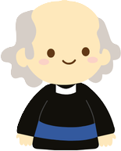
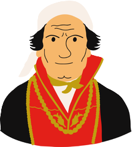
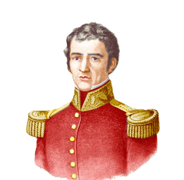
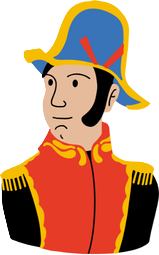
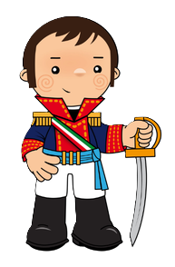
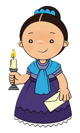

Miguel Hidalgo
Fue un sacerdote que participó en la Conspiración de Querétaro. Es uno de los nombres clave en el proceso de Independencia de México ya que el 16 de septiembre de 1810 proclamó el conocido como "Grito de Dolores", oficializando de esta forma la lucha del pueblo por la emancipación de España. A esto se debe que Miguel Hidalgo y Costilla se apode como el "Padre de la Patria". Entre sus acciones, se encargó de promulgar decretos para la abolición de la esclavitud, así como para la devolución de tierras indígenas.

José María Morelos y Pavón
Fue un sacerdote, militar y político cuya figura fue esencial en el proceso de independencia. Considerado como el "Siervo de la Nación", Morelos y Pavón se une a la insurrección cuando Hidalgo lo nombró lugarteniente para insurreccionar el sur. Destacó por ser un gran estratega militar, además se encargó de idear un plan de gobierno pensado para que asumiera el país tras la independencia. Uno de sus fines fue la disminución de la brecha entre la riqueza y la pobreza.

Guadalupe Victoria
José Miguel Ramón Adaucto Fernández y Félix, más conocido como Guadalupe Victoria, fue militar y político insurgente. Además fue el primer presidente de la República. Entre sus acciones en el proceso de Independencia de México destaca su participación en la toma de Oaxaca junto a Morelos. Este éxito le supuso ascender a General Brigadier y estuvo al mando del ejército en Veracruz.

Ignacio Allende y Unzaga
Nacido en el seno de una familia acomodada, Ignacio Allende y Unzaga fue militar y capitán del ejército. Su figura destaca desde el principio de la revolución, ya que fue uno de los miembros participantes en la Conspiración de Valladolid. Más tarde, también lo hizo en Querétaro y, junto a Miguel Hidalgo y Costilla, originó el conflicto armado. Es considerado uno de los "Héroes de la Independencia" y sustituyó a Hidalgo en el mando de la insurgencia.

Agustín de Iturbide
Fue militar y político que también ostentó el cargo de emperador de México. En un primer momento perteneció al ejército realista, aunque en el año 1821 se cambió de bando y luchó con los insurgentes. Entre sus acciones destaca la proclamación del denominado como Plan de Iguala, texto en el que exponía la declaración de país soberano e independiente a México.

Josefa Ortiz
Josefa Ortiz era la esposa del corregidor de Querétaro, fue una de las figuras participantes en la conspiración que dio lugar a la Guerra de Independencia. Participó en las reuniones secretas y gracias a ella se anticipó la revolución pues fue la encargada de avisar a Hidalgo y Allende de que habían sido descubiertos. Su decisión hizo que se diera el "Grito de independencia". Así, Josefa Ortiz es considerada una de las "heroínas de la independencia mexicana".
